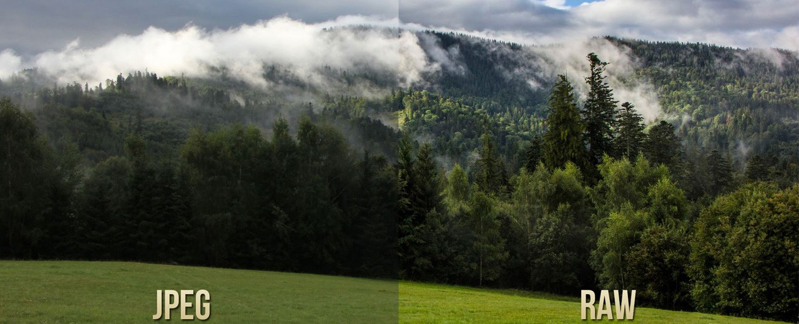
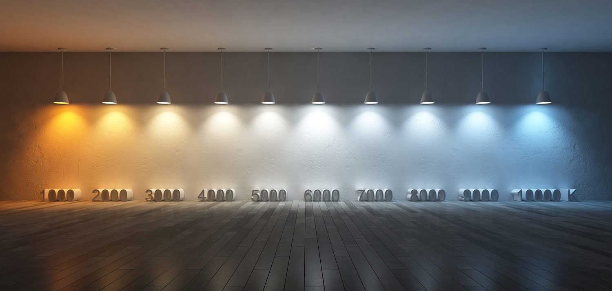
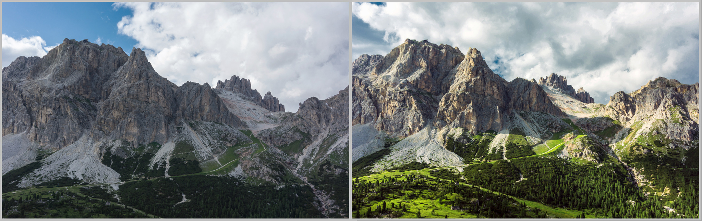

Дигиталната обработка и ретушът (Post-processing) са естественото продължение на творческия процес във фотографията. Вместо да променя реалността, обработката помага да се преодолеят техническите ограничения на сензора на камерата и да се вдъхне живот на заснетия кадър.

RAW файловете съдържат цялата сурова информация от сензора, което ви дава пълна свобода да възстановявате сенки и светли зони без загуба на качество.

Правилната температура на цвета определя дали кадърът ще носи топло усещане на залез или студена, мистична атмосфера.

Работата с криви и нива ви позволява да управлявате микроконтраста, за да изпъкнат основните детайли в обекта.
| № | Етап | Описание на процеса |
|---|---|---|
| 1 | Изрязване и геометрия | Коригиране на хоризонта, кадриране и премахване на излишни отвличащи елементи. |
| 2 | Осветеност (Exposure) | Възстановяване на детайли в прекалено тъмните сенки и преекспонираните светли участъци. |
| 3 | Цветове (Color Grading) | Настройване на наситеността, вибранса и специфичните цветови нюанси за постигане на настроение. |
| 4 | Финални детайли | Добавяне на лека рязкост (Sharpening) и контролиране на цифровия шум за завършен вид. |
„Негативът е еквивалент на композиторската партитура, а копието (готовият принт) е изпълнението.“